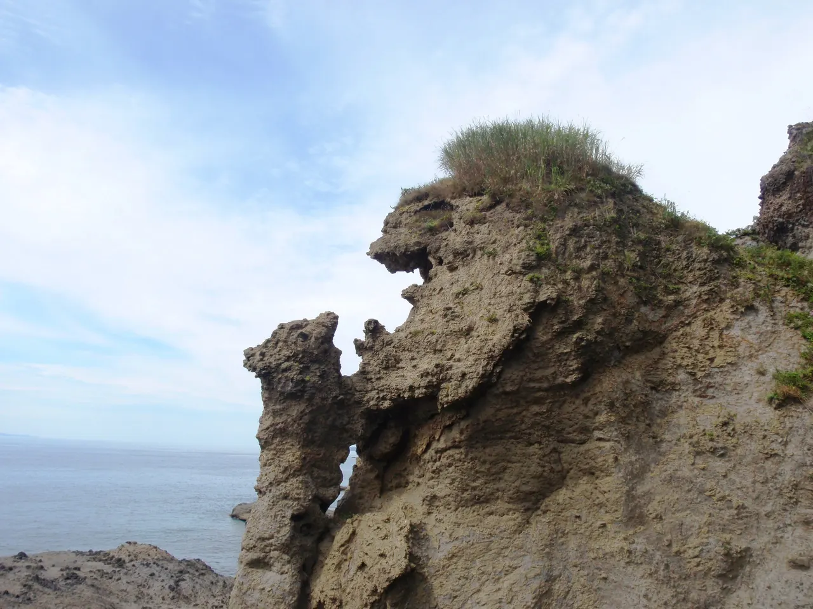
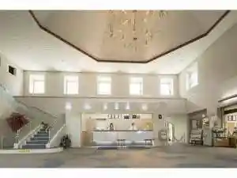
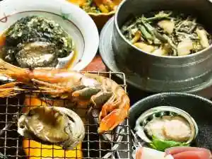
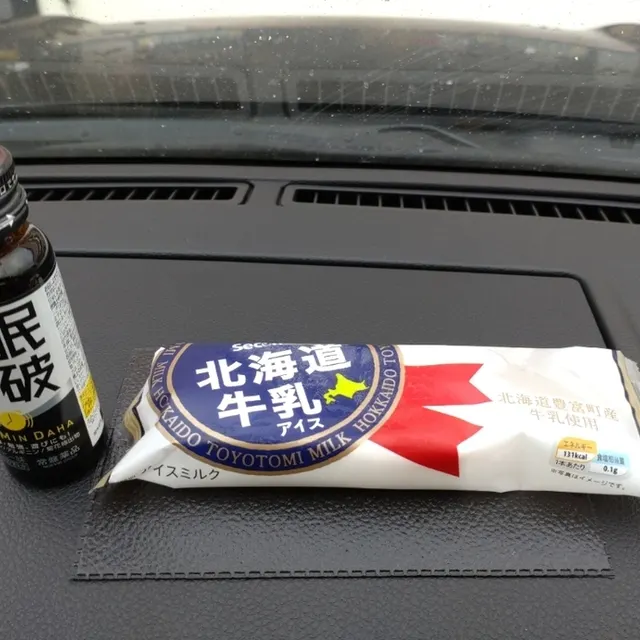
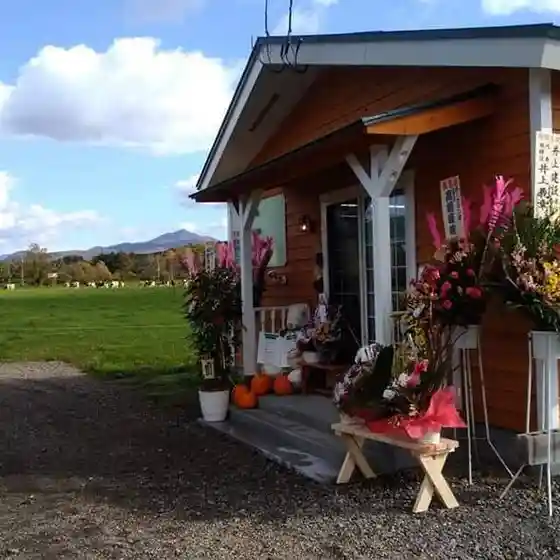
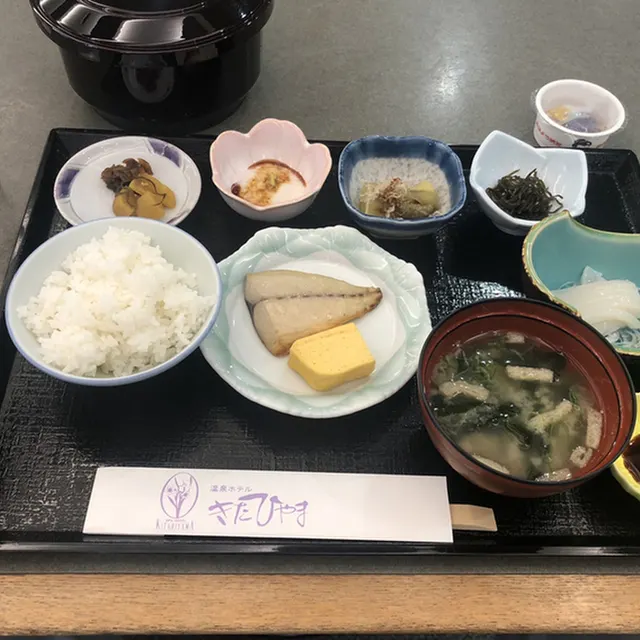
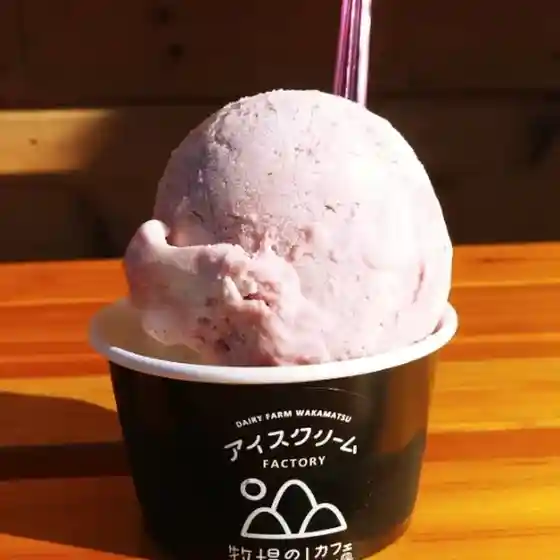
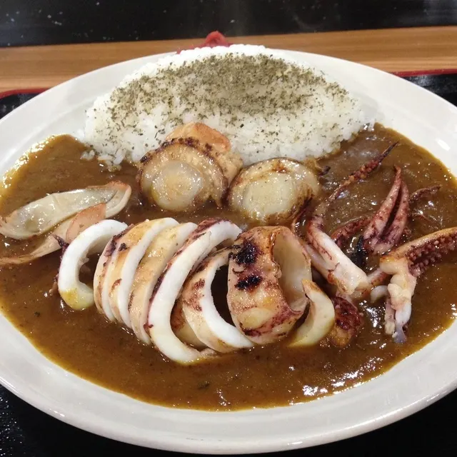
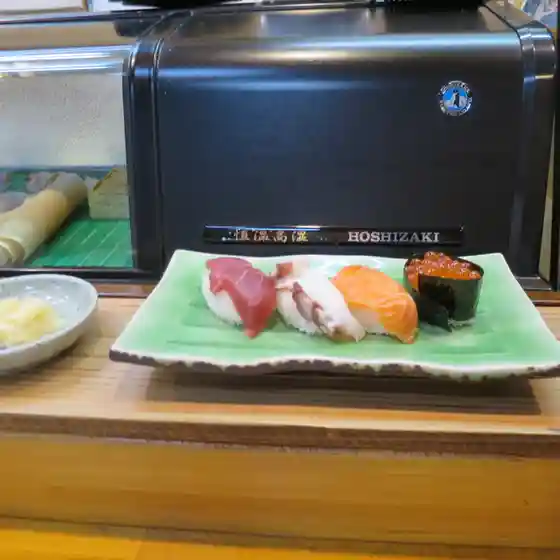

Setana
Setana · Hokkaido
Setana
Highlighted on the Hokkaido map.

Stay
温泉ホテルきたひやま

Onsen Hoteru Kitahiyama
あわび山荘

Awabi Sansou
Dining
セイコーマート 北桧山店

Seikoomaato Kita Hiyama Mise
グラス アイスクリーム

Gurasu Aisukuriimu
民宿長栄

Minshuku Chouei
きたひやま

Kitahiyama
アイスクリームファクトリー 牧場の山カフェ

Aisukuriimufakutorii Bokujou No Yama Kafe
冨美栄食堂

Fumi Sakae Shokudou
井村旅館

Imura Ryokan
きよ鮨

Kiyo Sushi
中栄菓子舗
Naka Sakae Kashi Ho
海の家
Uminoie
瀬棚物産 マリンショップみすぎ
Setana Bussan Marinshoppu Misugi
新矢旅館
Shin Ya Ryokan
いこい
Ikoi
えりも庵
Erimo Iori
どんどん 北檜山店
Dondon Kita Hiyama Mise
天沼食堂
Amanuma Shokudou
さわだ旅館
Sawada Ryokan
漁師の直売店
Ryoushi No Chokubai Mise
マリン倶楽部
Marin Kurabu
憩居酒場 しっぽ野
Kei Kyo Sakaba Shippo No
民宿三杉館
Minshuku San Sugi Kan
わっかけ岩
Wakkake Iwa
民宿おがわ
Minshuku Ogawa
和み
Nagomi